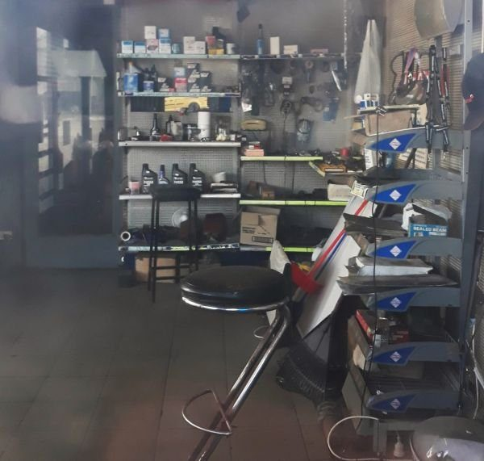
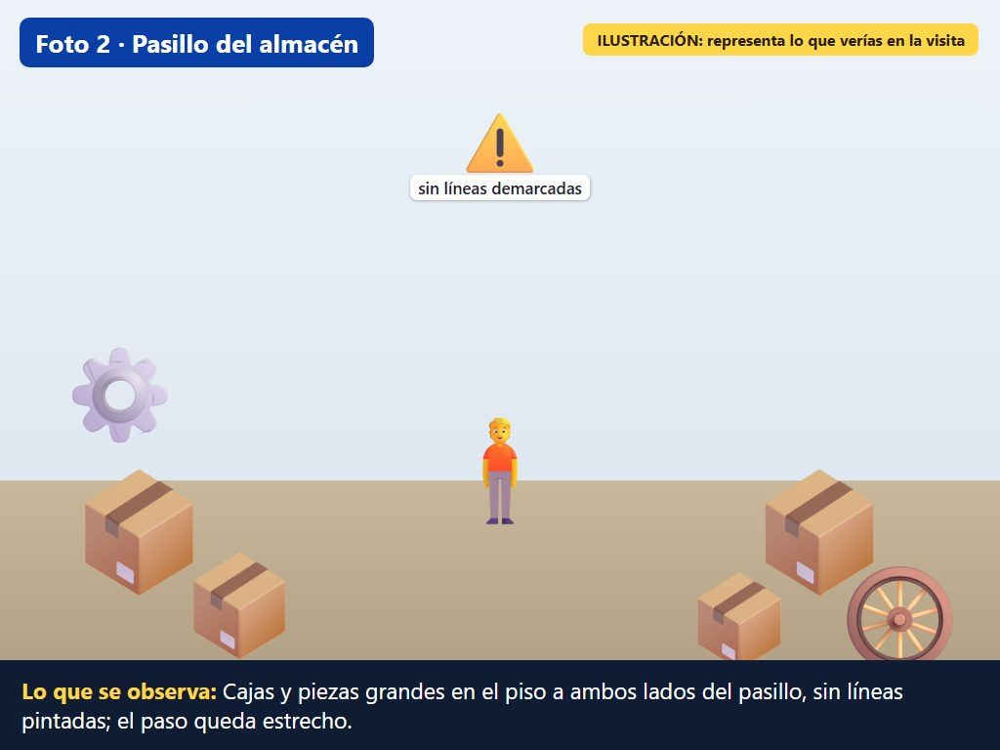
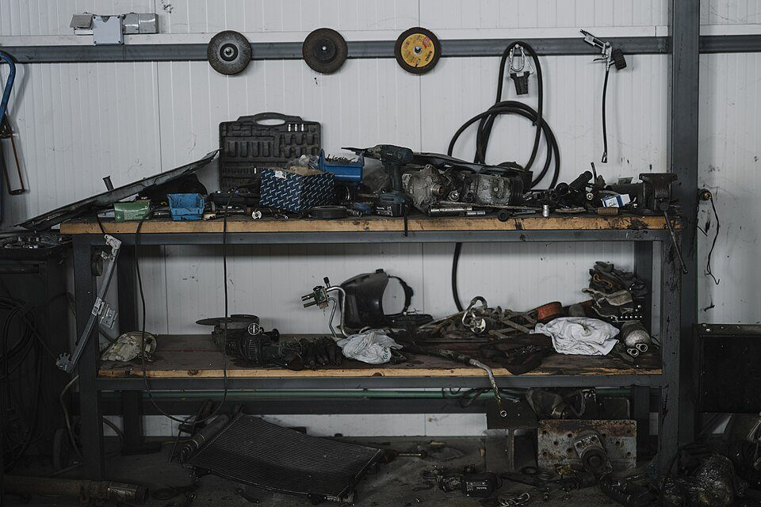
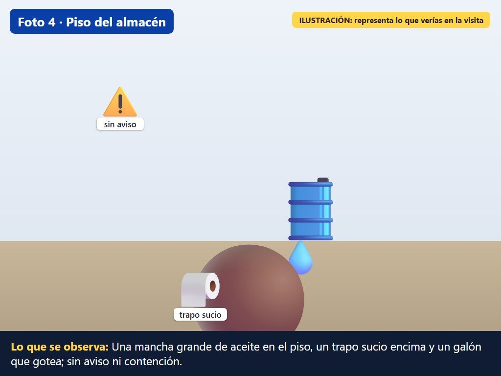
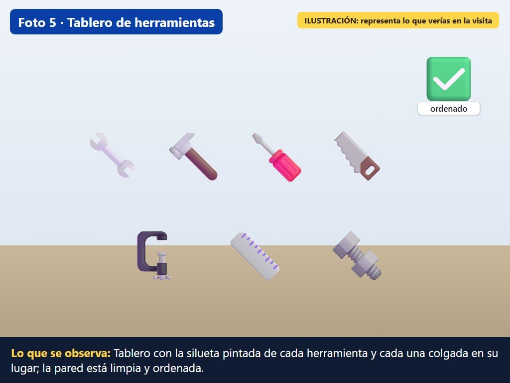
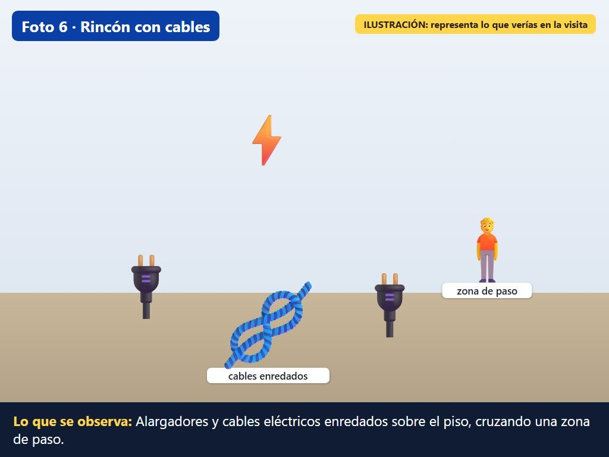

Caso 2: Almacén de Repuestos AutoExpress
- Sector
- Comercio de repuestos de vehículos
- Ubicación
- Santiago
- Empleados
- 9 hombres y 2 mujeres
- Años en el mercado
- 12
- Persona de contacto
- Marisol Peña, 51 años, gerente-propietaria
- Estrategia a implementar
- Implementación Técnica de las 5S en Empresas
1. Entrevista con el dueño
«Los clientes se quejan de que tardamos mucho en encontrar la pieza. A veces vendemos una pieza que no teníamos en inventario porque estaba en otro rincón. Se pierde tiempo y dinero. Nadie tiene a cargo la limpieza, cada quien limpia su pedazo cuando puede. Nunca hemos hecho una revisión formal del orden. Queremos que el almacén se vea y funcione como los de las empresas grandes.»
2. Recorrido por la empresa (fotos)

Foto 1 · Estantería principal
Lo que se observa: Estantería metálica con productos y herramientas de distintos tipos mezclados; no se ven rótulos del contenido de cada nivel.
Guárdala en tu teléfono (mantén presionada la imagen) para subirla a la plataforma.

Foto 2 · Pasillo central ilustración
Lo que se observa: Cajas y piezas grandes en el piso a ambos lados del pasillo, sin líneas pintadas; el paso queda estrecho.
Guárdala en tu teléfono (mantén presionada la imagen) para subirla a la plataforma.

Foto 3 · Mesa de trabajo
Lo que se observa: Mesa de trabajo con piezas usadas, herramientas y cables encima y debajo de ella, sin un lugar definido para cada cosa.
Guárdala en tu teléfono (mantén presionada la imagen) para subirla a la plataforma.

Foto 4 · Piso junto a la entrada ilustración
Lo que se observa: Una mancha grande de aceite en el piso, un trapo sucio encima y un galón que gotea; sin aviso ni contención.
Guárdala en tu teléfono (mantén presionada la imagen) para subirla a la plataforma.

Foto 5 · Pared de herramientas ilustración
Lo que se observa: Tablero con la silueta pintada de cada herramienta y cada una colgada en su lugar; la pared está limpia y ordenada.
Guárdala en tu teléfono (mantén presionada la imagen) para subirla a la plataforma.

Foto 6 · Rincón del fondo ilustración
Lo que se observa: Alargadores y cables eléctricos enredados sobre el piso, cruzando una zona de paso.
Guárdala en tu teléfono (mantén presionada la imagen) para subirla a la plataforma.
3. Tu trabajo en la plataforma
Crea el caso con este nombre exacto (cambia el número por el de tu equipo). Así se califica tu trabajo automáticamente:
Almacén de Repuestos AutoExpress - Equipo N
Estrategia que debes escoger: Implementación Técnica de las 5S en Empresas.
Documento que debes redactar con el Redactor (✨ Niko): Política Organizacional de 5S y Control Visual.
Herramientas de la plataforma para este caso:
- Diagnóstico 5S
- Fotos con hallazgos
- Planner
- Kit Priorización
- Redactor con Niko: Política Organizacional de 5S y Control Visual
4. Carpeta de entregables (tu lista de cotejo)
Así lo harías en una asesoría real: al final entregas una carpeta con todo esto. Tu supervisora lo revisará y firmará la lista de cotejo.
- ☐ Solicitud del servicio y datos de la empresa (ficha completa)
- ☐ Objetivo del servicio definido
- ☐ Visita realizada con su ayuda memoria
- ☐ Fotos de evidencia con tu hallazgo escrito y confirmado
- ☐ Diagnóstico completo (más del 70 % de los criterios respondidos)
- ☐ Plan de trabajo con responsables y fechas
- ☐ Avance registrado en el cronograma (al menos 2 actividades)
- ☐ Kit de medición en Excel trabajado y subido a Documentos
- ☐ Documento de implementación (Word hecho con el Redactor)
- ☐ Informe final con mejoras y recomendaciones
- ☐ Carpeta comprimida con portada firmada, subida al Proyecto final (Unidad V) por una sola persona
Desarrollado por Johan Tapia, PhD